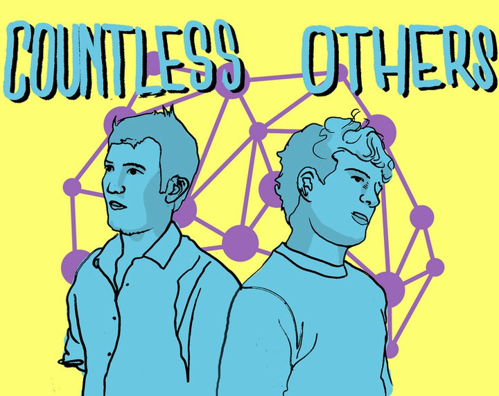

Countless Others
Countless Others
Videos
Releases

Countless Others is the electronic pop project of Sam Fisher. The project formerly included Charlie Abbott, currently releasing music as RYV.
Though no longer publishing with Belgian Man, Countless Others publishes music independently via countlessothers.com. Countless Other's self-titled album is slated for release in late April, 2013.
- Sam released the single, My Father was a Saint, Too, in May, 2012.
- David Yanofsky released a video for My Father was a Saint, Too in May, 2012.
- Sam released the single, How Does It Feel?, with Belgian Man in March, 2012.
- David Yanofsky released a video for How Does it Feel? in March, 2012.
- Sam and Charlie's EP, Fantastickal Worldz, was released in July, 2011.
- Fantastickal Worldz was reviewed on July 23rd 2012 by Nick Mirin for Pop Veggies
Soundcloud
Video for How Does It Feel?, by Countless Others, directed by David Yanofsky.
Video for My Father Was A Saint Too, by Countless Others, directed by David Yanofsky.
Countess Others Live! At the Middle East, 7/25/11
How Does It Feel?
Fantastickal Worldz